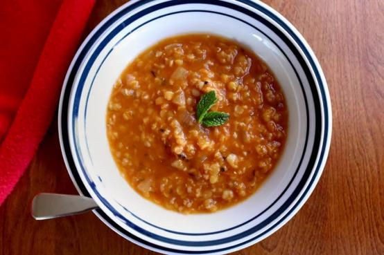

Red Lentil 'Bride' Soup (Düğün Çorbasi)

A traditional Turkish soup. It's called Bride Soup (Düğün Çorbası) in Turkish language because,
they make this soup on their wedding days.
Easy-to-cook and tasty.
Ingredients
- ¼ cup butter
- 2 onions, finely chopped
- 1 teaspoon paprika
- 1 cup red lentils
- ½ cup fine bulgur
- 2 tablespoons tomato paste
- 8 cups vegetable stock
- ⅛ teaspoon cayenne pepper
- 1 tablespoon dried mint leaves
- 4 slices lemon
- ½ teaspoon chopped fresh mint